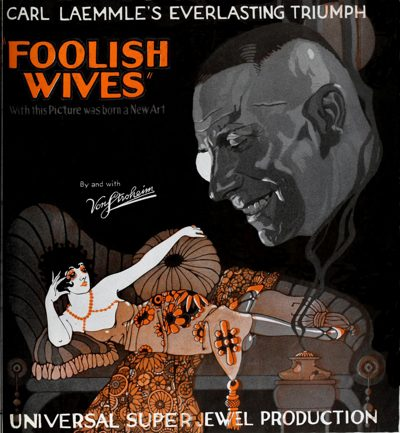

Foolish Wives
Starring: Miss DuPont, Maude George, Mae Busch
Director: Erich von Stroheim, Gustav Machatý
Writer: Erich von Stroheim
Producer: Irving Thalberg, Carl Laemmle
Foolish Wives is a 1922 American erotic silent drama film produced and distributed by Universal Pictures under their Super-Jewel banner and written and directed by Erich von Stroheim. The drama features von Stroheim, Rudolph Christians, Miss DuPont, Maude George, and others.
Watch Online: Internet Archive
Trivia
- Universal's vice-president and publicity director, R. H. Cochrane, eager to retain their "new discovery", agreed to a substantial increase in von Stroheim's remuneration.
- Producer Laemmle was outraged when he discovered Cochrane's largesse, but acquiesced to a fait accompli.
- Set construction on the Universal back lot was already under way by 6 April 1920, before von Stroheim had renegotiated and signed the contract.
Filming Locations
- The extravagant spending on Foolish Wives proceeded unabated when von Stroheim travelled to Point Lopus to shoot the coastal scenes and those requiring continuity linkage with shots made at Universal's backlot.
Previous Showings
1 Run • 1 Festival
All runs on record (1):
- October 12, 2012UNIVERSAL PICTURES Part 1: 1930-1935